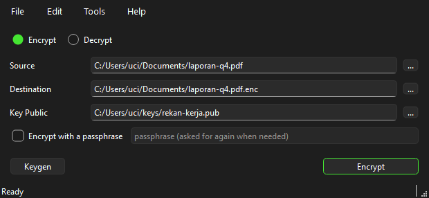
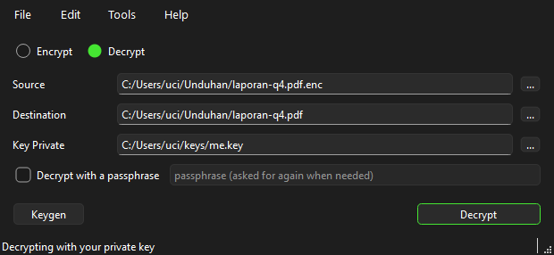
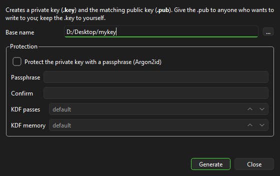
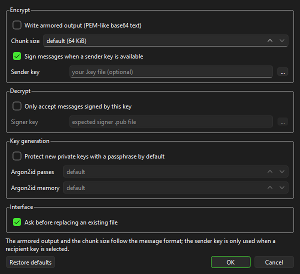

Tangkapan layar






Fitur
- Enkripsi/dekripsi berkas (kunci publik atau passphrase), multi-penerima (v2)
- Enkripsi/dekripsi teks
- Pembuatan kunci, ekstraksi kunci publik, info kunci
- Tanda tangan terpisah (sign/verify)
- Inspeksi pesan
- Drag & drop, operasi latar belakang, penulisan atomik
- 100% kompatibel dengan CLI
tesseract-crypt